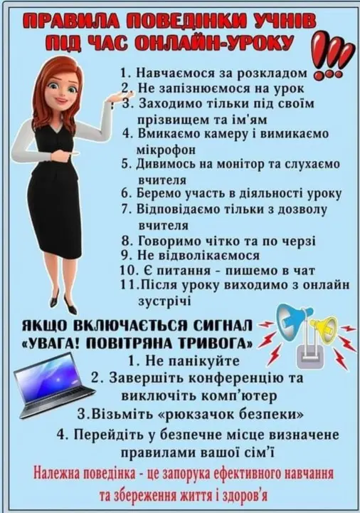
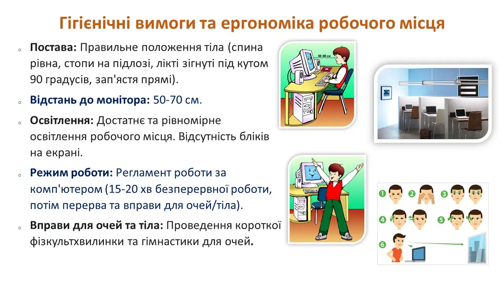
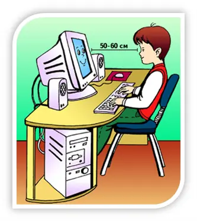
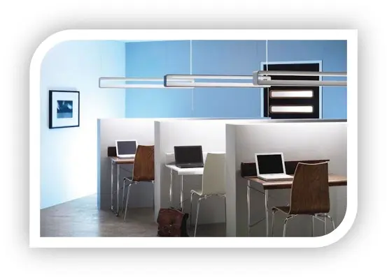
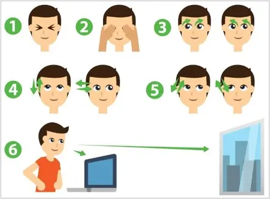
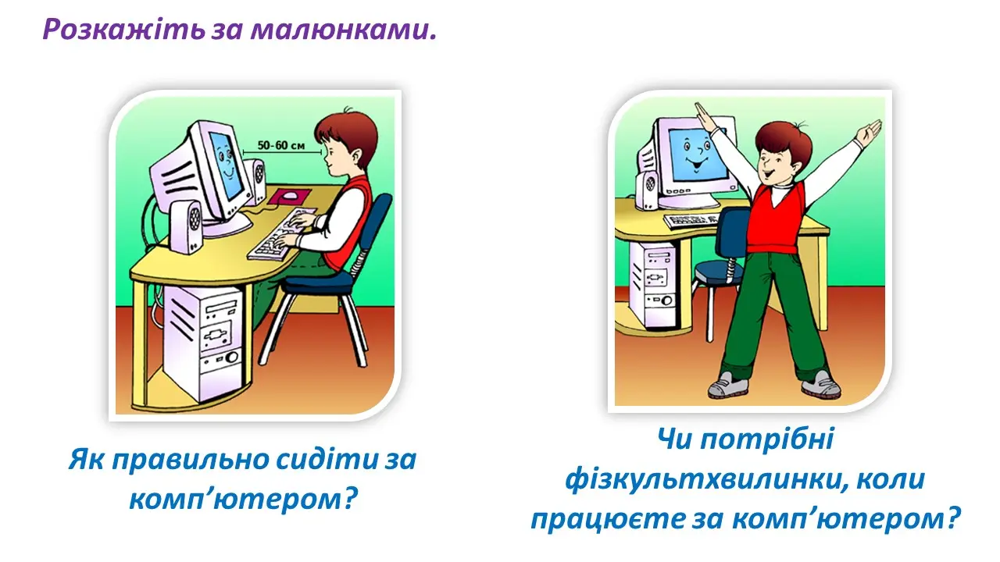
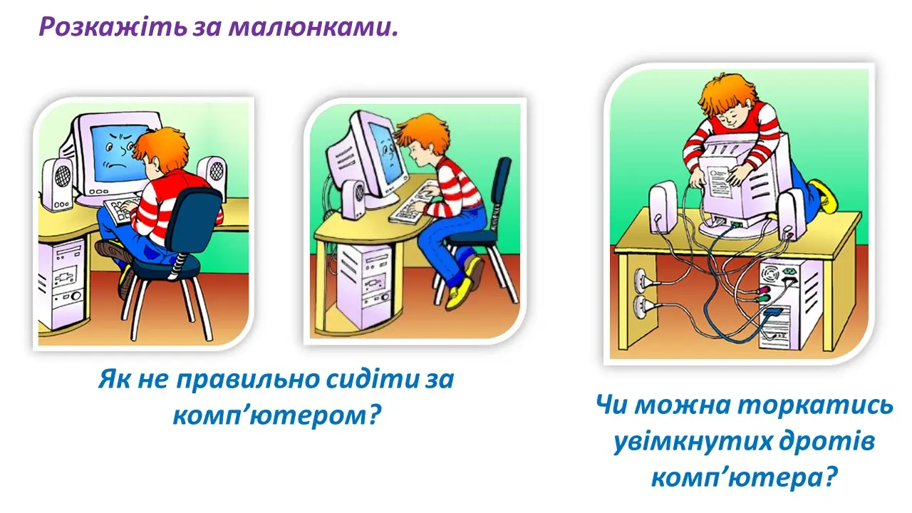
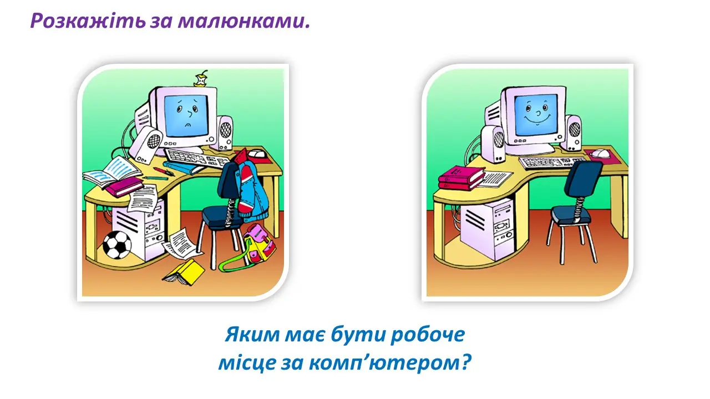
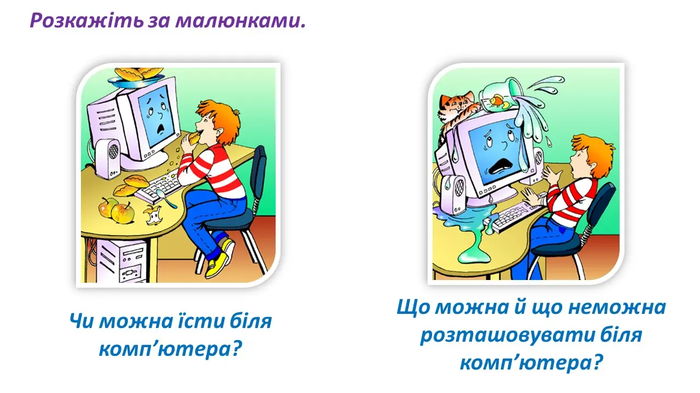

Урок № 1
Правила поведінки та безпеки життєдіяльності при роботі в комп’ютерному класі
Інтерактивний план-конспект уроку для 8 класу НУШ
🎯 Мета уроку
- Освітня: Сформувати в учнів уявлення про основні правила безпечної поведінки в комп’ютерному класі та під час роботи з комп’ютерною технікою; ознайомити з можливими ризиками та способами їх уникнення; актуалізувати знання про гігієнічні вимоги до роботи за комп'ютером.
- Розвивальна: Розвивати вміння аналізувати інформацію, робити висновки; формувати навички свідомого та відповідального ставлення до власного здоров’я та здоров’я оточуючих; розвивати логічне мислення та увагу.
- Виховна: Виховувати відповідальність за дотримання правил безпеки; виховувати дисциплінованість, акуратність, дбайливе ставлення до шкільного майна.
✅ Очікувані результати
Після уроку учні зможуть:
- Називати основні правила безпечної поведінки в комп’ютерному класі.
- Пояснювати наслідки недотримання правил безпеки для здоров'я та обладнання.
- Демонструвати правильну поставу під час роботи за комп’ютером.
- Розрізняти безпечні та небезпечні дії в комп’ютерному класі.
- Застосовувати отримані знання на практиці для збереження власного здоров'я та майна.
📚 Тип уроку
Урок вивчення нового матеріалу та формування практичних навичок.
💻 Обладнання та ПЗ
- Комп’ютери для кожного учня (або групи учнів).
- Проєктор або інтерактивна дошка.
- Презентація "Правила безпечної поведінки в комп'ютерному класі".
- Плакати або ілюстрації з правилами безпеки.
- Роздатковий матеріал (пам'ятки з правилами безпеки, тестові завдання).
- Засоби для вимірювання освітленості (люксметр, якщо є).
- Лінійка (для вимірювання відстані до монітора).
🔗 Міжпредметні зв'язки
- Основи здоров'я
- Фізична культура
- Захист України
Вивчення нового матеріалу
1. Загальні правила поведінки в комп’ютерному класі
- Вхід до класу лише з дозволу вчителя.
- Заборона приносити їжу, напої, сторонні предмети.
- Дотримання тиші, не бігати, не штовхатися.
- Обережно поводитися з меблями та технікою.
- Повідомлення вчителя про будь-які несправності чи незрозумілі ситуації.
- Початок і закінчення роботи за командою вчителя.
Демонстрація слайдів презентації.
2. Правила безпеки при роботі з комп'ютерною технікою
До початку роботи:
- Перевірка справності обладнання (цілісність кабелів, монітора, клавіатури).
- Не торкатися дротів, роз'ємів, задніх панелей обладнання.
- Вмикати/вимикати комп'ютер тільки за вказівкою вчителя.
Під час роботи:
- Не торкатися екрана монітора руками.
- Не допускати різких рухів, що можуть призвести до падіння обладнання.
- Не намагатися самостійно усувати несправності.
- Повідомляти вчителя про будь-які неприємні відчуття (біль в очах, голові, втома).
Після закінчення роботи:
- Завершити роботу з усіма програмами.
- Коректно вимкнути комп'ютер.
- Привести робоче місце в порядок.
Демонстрація слайдів презентації з візуальними прикладами.
3. Гігієнічні вимоги та ергономіка робочого місця
- Постава: Правильне положення тіла (спина рівна, стопи на підлозі, лікті зігнуті під кутом 90 градусів, зап'ястя прямі).
Практичне відпрацювання: Запропонувати учням сісти правильно за комп'ютерами, виправити помилки.
 - Відстань до монітора: 50-70 см.
Практичне відпрацювання: Кожен учень вимірює відстань за допомогою лінійки.
- Освітлення: Достатнє та рівномірне освітлення робочого місця. Відсутність бліків на екрані.
Практичне відпрацювання (якщо є люксметр): Виміряти рівень освітленості.
 - Режим роботи: Регламент роботи за комп'ютером (15-20 хв безперервної роботи, потім перерва та вправи для очей/тіла).
- Вправи для очей та тіла: Проведення короткої фізкультхвилинки та гімнастики для очей (приклад вправ: подивитися вліво-вправо, вгору-вниз, кругові рухи очима, "пальмінг" – закрити очі долонями). Обов'язкове виконання. 
Демонстрація слайдів з ілюстраціями правильної постави та вправ.
Закріплення вивченого матеріалу та формування навичок
1. Робота з пам'ятками
Учні отримують пам'ятки з основними правилами. Запропонувати прочитати та поставити запитання.
   2. Ситуаційні завдання
Вчитель пропонує різні ситуації, а учні мають визначити, чи відповідає поведінка правилам безпеки, і як потрібно діяти:
- "Ви прийшли в комп'ютерний клас, а на столі стоїть відкрита пляшка води. Ваші дії?"
- "Під час роботи ви помітили, що монітор мерехтить. Ваші дії?"
- "Ваш сусід по парті почав бігати по класу і штовхати стільці. Як ви поводитеся?"
- "Ви втомилися, очі почали боліти. Що ви робите?"
3. Короткий тест або інтерактивна вправа "Так/Ні"
Дайте відповідь "Так" або "Ні" на наступні запитання:
- Чи можна торкатися дротів під час роботи комп'ютера? (Ні)
- Чи потрібно сідати якомога ближче до монітора? (Ні)
- Чи можна їсти в комп'ютерному класі? (Ні)
- Чи потрібно повідомляти вчителя про несправності? (Так)
- Чи варто робити перерви під час тривалої роботи за комп'ютером? (Так)
- Чи можна користуватися телефоном під час уроку без дозволу вчителя? (Ні)
Ви також можете пройти інтерактивну вправу за посиланням: LearningApps.org
Перевірка знань
Натисніть на картку, щоб побачити відповідь.
- Назвіть 3 основні правила поведінки в комп'ютерному класі.
- Що потрібно перевірити перед початком роботи з комп'ютером?
- Яка правильна відстань до монітора?
- Чому не можна їсти в комп'ютерному класі?
- Що робити, якщо відчуваєте втому очей під час роботи?
- Навіщо потрібно повідомляти вчителя про несправності?


Домашнє завдання
Обов'язкове:
- Вивчити правила безпеки життєдіяльності та поведінки в комп’ютерному класі (видана пам'ятка або відповідний розділ підручника).
- Повторити правила безпеки зору та постави.
За бажанням (на вибір):
- Підготувати невелике повідомлення або презентацію на тему "Вплив комп'ютера на здоров'я людини та як його мінімізувати".
- Розробити власний плакат "Безпека в комп'ютерному класі".